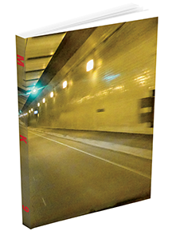

Death Squad
Collected Documentation:
1997 North American Tour Book
(ISBN 987-1-7780934-5-6)
200 pages include: 145 photos, 33 handouts, 47 flyers,
writings, documents and an extensive interview.
Second edition of 99 has a gloss cover instead of matte,
no flaps and a USB card with the same audio as the original version instead of the three CDs.
Same content with some slight layout adjustments.
Added some thoughts about a good friend who passed last year.

MK9 Book
2025 Neural Operations NO39
ISBN 978-1-7780934-4-9
Edition of 300
8.5 x 11 inch full color 348 page softcover book.
Includes 130 flyers, 85 handouts, 76 photographs, 65 photo cards,
artwork, writings and an interview.
Plus, a download code for 7 compilation tracks
and 2 archive videos; Procedure 2002 + Paranoia and Attrition 2003.
The first time these videos have been made widely available.
Regular Edition
Every Book comes with a photo download code,
1-2 original show handouts,
1-2 promo tour cards,
1 small original show flyer and a vinyl letter from the 2004 Dissident Tour.
The first 100 will include an original photo card.
Special Edition of 14
Everything from the Regular Edition plus:
1 Anti-Performance Original Handout,
2 Large show flyers and a promo photo item.
Extra Special Edition of 7
Everything from the Special edition plus:
A physical item from the 7Hz 2002 Alarm tour performance
2 giant show flyers.
Archive photos included by these amazing people:
Randy Yau, Gaya Donadio, Kris Wlodarczyk, Sylvie Cartiaux,
Gretchen Heinel, Ullrich Bemmann, Scott Arford and Joe Colley.
Michael Nine started MK9 when Death Squad ended.
A progression and continuation of creative output.
Death Squad was about general rage towards self and the world,
whereas MK9 is a more focused and exacting look
at our species and the environment we live in.
Presenting snapshots and moments of this human timeline.
Using projections, handouts and performance.
This book covers the first twenty five years
of work by Michael Nine as MK9.
11 x 8.5 Full colour, 148 Page softbound book
Comes with a three disc digipack.
Edition of 200
ISBN: 978-1-7780934-3-2
Published by Neural Operations 2024
A book with a compact disc set remembering the works of Greg Scott
who took his own life in 2003. A member of Beg For Eden, Final Solution
and his last project Hydra, which this book focuses on.
Three CDs include; Power (BloodLust! 1996), Neurology Splits
(Spastik Soniks 1995, Segerhuva 2003), Anal Test Seven Inch (XN Recordings 2002),
comp tracks from Sounds of Sadism (Malsonus 1999) and C4: Sounds Based in Explosives
(Spastik Kommunikations 1998) Also an unreleased live recording of HYDRA from 1998
at the Bank in New York City as well as an interview by Greg of Mike Dando (Con-Dom).
Plus a download code for an early unreleased mix of the Neurology tape and more.
Included are writings and recollections shared by friends and collaborators:
Peter Messina, Chris Goudreau, Edward J. Southgate,
Eric Suchodolski, Jane Elizabeth, John Figueroa,
Sal Scarpulla, Guy Gustafson, Shade Rupe and Michael Nine.
Interviews by Anthony Saunders (Assume Power Focus),
Benoit Chambon (Noiseist) and Xavier Laradji (Timeless).
Archival personal correspondence, show flyers and photos.
A one of kind definitive collection, showcasing an amazing artist and friend
who left us far too soon.
A triple jewel case three CD version with a 10 panel booklet is also available.
Six years have passed since this DVD set was first released by myself and Influencing Machine Records.
We ran out of copies quickly. The series first aired in 1995, almost a thirty-year anniversary.
I thought that another run would be a good way to commemorate this.
So here it is, exactly as the original, with a new cover.
This release features 16 page full-color booklet with original flyers and artwork
and liner notes by G.X. Jupitter-Larsen, Scott Arford, J. Campbell, Jeff Gunn and Michael Contreras.
It contains approximately 13 hours of footage, including nearly every performance
and video submission broadcast as part of The Pain Factory series:
Live Performances:
Killer Bug - Crawl Unit - Seethe - Flat Tire - Fin - Nihil - Spastic Colon - The Haters
Big City Orchestra - Radiosonde - Not Breathing - Dr. Crystal Mess - YAU - Anal Sadist
Stimbox - Hungry Ghost - Sirvix - Loaded - Chris Cobb & Yael Bartana
Moe! Staiano - UBZUB - Instagon - Air-o-gant - Death Squad - Frank Moore - Glass Crash
Taped Submissions and Performances by:
Xome - The Amputease - Taint - Scott Arford - Seedmouth - Genetic Death Cell
The Haters - Death Squad - Rotten Jesus - MSBR - Electronic Karma Sutra
Macronympha - Stimbox - Frank Moore - Instagon - Death Keeps Me Awake
Short Films and Video:
The Digger - Snuff Balloon - Holes On The Neck - Institutional Broadcast
Serrrations - TV Homicide - Dahmer Spectacle
*Even though these DVDs contain the exact content broadcast on television at that
time, some people may consider the material to be of an adult or mature nature*
Death Squad - Collected Documentation
North America & Europe 1998 - 2000
204 Pages, 8.5" x 11" Perfect bound edition of 250.
Three CDs of unreleased material and a single DVD.
Covering the Self Annihilation Tour, Intent, Enacted Hostage Sequence,
Almost Dead in Chicago, Sentinels of the Apocalypse Tour and
Closing Statements.
With contributions by: Scott Arford, Lee Bartow,
J.Frede, Russ Kent, Tomas Novak and Jason Quell
book page dsbook.info
1998 Disc One
1. Radiosonde - Promo Tour CD 1998 (6:46)
2. Chapter 23 - Promo Tour CD 1998 (13:18)
3. Death Squad - Promo Tour CD 1998 (4:02)
4. Radiosonde Live at 7hz - San Francisco, CA 9.12.98 (Excerpt 5:26)
5. Chapter 23 Live at 7hz - San Francisco, CA 9.12.98 (Excerpt 9:13)
6. Death Squad Live - Lahti, Finland 9.26.98 (Excerpt 3:05)
7. Location Unknown - Michael on train complaining, audio from video (3:28)
8. KFJC 89.7 Radio Free Hatred - Los Altos, CA - Death Squad Interview 12.10.98 (19:19)
2000 Disc Two
1. Quell Tour Promo CD Live 6.6.99 (3:42)
2. Quell Tour Promo CD Live 9.18.98 (7:00)
3. Death Squad Live - Trnava, Slovakia 4.6.00 (28:03)
4. Quell Live - Wroclaw, Poland 4.7.00 (13:30)
5. Death Squad Live - Duisburg, Germany 4.1.00 (Excerpt 3:50)
6. Death Squad last confession before final show (12:52)
2000 Disc Three
1. KPFA 94.1 The No Other Radio Network - Berkeley, CA 7.12.00 (24:39)
Scott Arford, Kush Arora and Michael Nine interviewed by Mr. Hate
2. Death Squad - Unreleased track recorded on tour 1998 (14:14)
3. Alternate soundtrack for final show (23:00)
DVD Disc Four
1. Spoken Video 1996 (6:04)
2. Theological Genocide 1998 (50:14)
3. Apocalyptic Pathology 1996 (27:07)
4. Double Murder Suicide 1998 (51:35)
5. Final Performance Video Projection 2000 (13:12)
The audiobook has been removed.
There are some new overreaching terms of use
with the distribution service I originally submitted my book to,
since their acquisition by Spotify.
I will be finding a new distributor shortly.
The audio sample on soundcloud will remain up.
05.31.25 Sixth Anti-Performance - Social Interference Test
@ Doctor Luke's, Sydney, Nova Scotia Canada with:
Kate Rissiek, Art Damage, dang, Bleachlake, Miox and Rhoda
05.19.21 Mayhem 19 - Death Squad / MK9 Special with host Mark Mullins
Interview and Music - KFJC 89.7 Los Altos Hills, California.
Archive on Mixcloud
12.18.19 Rusalka / MK9 - Live sets / interviews on
KPFA 94.1 - The No Other Radio Network - Berkeley, California.
Archive on Mixcloud
11.22.19 At The Toast Collective, Vancouver BC Whip of the UFO AFB Album Release with Exeunt / Rusalka / MK9 - Pictures here
10.21.19 KPFA 94.1 - The No Other Radio Network - Berkeley, California.
Interview and music: Michael Nine and Influencing Machine Records.
Show archive on MixCloud